Vista da antiga Acrópole onde se veem, no alto à direita, as ruínas do Partenon: a
Grécia que tanto inspirou a Roma na Antiguidade. A influência dessas duas civilizações ainda permanece
viva.
PNIK/Shutterstock.com
Na Grécia Antiga, artistas, dramaturgos, poetas, arquitetos e filósofos, entre
outros
personagens do universo cultural, desenvolveram obras e estabeleceram ideais de beleza que continuam a
exercer profunda influência na sociedade atual. Embora as origens gregas sejam mais antigas, esse
desenvolvimento ocorreu sobretudo entre os séculos IX a.C. e V a.C., quando foram formadas, inclusive, as
cidades-Estado constituindo regiões autônomas – a exemplo de Atenas, Esparta ou Corinto – que tinham um
centro político, econômico, religioso e cultural criado à sua maneira.
Os artistas gregos eram em geral muito inovadores. Diferentemente do que ocorreu no
Egito, onde se verificou a necessidade de conservação e de estabilidade – o que manteve as convenções
artísticas praticamente invariáveis por quase três mil anos –, os gregos buscaram renovar as tendências e
modas artísticas de sua época, efetuando admiráveis mudanças estilísticas ao longo de alguns séculos. O
desenvolvimento da arte na Grécia Antiga é dividido pelos historiadores da arte em quatro estágios:
geométrico, arcaico, clássico e helenístico.
Em 146 a.C., a Grécia foi dominada por Roma, que passou a influenciar as criações
gregas
e a ser influenciada pela arte grega de séculos anteriores.
Por que a arte grega resistiu ao tempo, mesmo que muitas obras estejam em
ruínas?
Quais são as diferenças entre os principais períodos da arte grega?
Quais são as principais características da escultura e da arquitetura
greco-romanas?
Neste capítulo, serão abordadas as habilidades
EM13LGG601,
EM13LGG602,
EM13LGG603 e
EM13LGG604.
Período geométrico
O estilo geométrico floresceu entre 900 a.C. e 700 a.C. e foi assim chamado pelo
uso, na pintura de vasos cerâmicos, de motivos decorativos como triângulo, zigue-zague, meandro , xadrez, círculos concêntricos e outros. Nesses vasos,
as figuras humanas eram, em geral, estilizadas.
Na cratera apresentada, a cena principal ocupa a parte mais larga do vaso. Sobre
um esquife está o morto, cercado por pessoas enlutadas de sua casa. Para maior clareza, o homem morto é
retratado de lado, e a mortalha quadriculada, que cobriria o corpo, foi levantada e estilizada na forma
de um longo retângulo com duas projeções. A cena representa parte do ritual funerário ateniense, quando
o morto ficava disponível para o luto público. Um funeral generoso era uma ocasião para mostrar riqueza
e status, e a multidão de luto era tão importante e desejada que as famílias chegavam a contratar
pessoas para o evento. Assim, a representação de um funeral no vaso não era apenas um registro de fatos,
mas um registro visual da alta reputação do defunto na sociedade. A faixa em destaque mostra uma
procissão de bigas (carros puxados por cavalos) e soldados de infantaria. Os números podem se referir às
façanhas militares do morto. Como os escudos e as bigas desempenharam um papel mais limitado nessa época
do que na Idade do Bronze anterior, é provável que a cena evoque a ascendência gloriosa e as tradições
às quais o falecido pertencia.
As urnas funerárias adornadas com elementos artísticos estão presentes em diversas
culturas ao redor do mundo, nas mais diferentes épocas da história da humanidade. A urna ao lado é da
cultura marajoara, da Ilha de Marajó (Pará, Brasil), e remonta ao período da Era Pré-Colombiana. Note
que os desenhos geométricos e estilizados também estão presentes na produção dos povos marajoaras.
Muitas de suas representações trazem seres humanos, animais e plantas com traços naturalistas. Grande
parte da representação, como se observa na imagem, é estilizada. Muitas vezes a estilização é tão
sofisticada que dificulta o reconhecimento de partes de seres humanos e animais nos desenhos.
Arte em leitura
Este vaso cerâmico ateniense, com mais de um metro de altura, é um exemplo da
complexa
decoração, executada de modo linear e estilizado, que dá nome a esse período. O vaso, datado de
c. 750 a.C. a 735 a.C., era uma espécie de lápide com inscrição de cenas e rituais funerários em
meio a elementos decorativos. Observa-se, na parte superior, o corpo do falecido deitado sobre
um esquife fúnebre
Nos dias de hoje, você consegue identificar obras de arte ou projetos
arquitetônicos que têm como característica o uso destacado de traços ou formas geométricas?
Detalhe do vaso funerário do Cemitério de Dipylon.
Rogers Fund, 1914/Metropolitan Museum of Art, Nova York
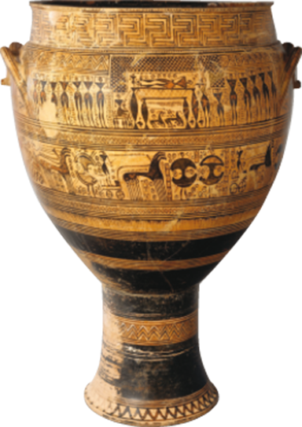
Vaso grande ( cratera ) funerário do Cemitério de Dipylon,
atribuído ao Ateliê de Hirschfeld, Atenas. c. 750 a.C.-735 a.C. Cerâmica terracota, 108 cm x
72,4 cm de diâmetro. Metropolitan Museum of Art, Nova York.
Rogers Fund, 1914/Metropolitan Museum of Art, Nova York
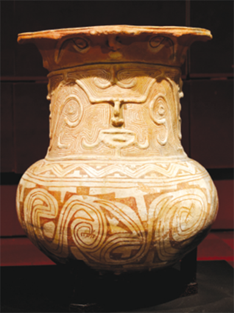
Urna funerária da cultura marajoara, datada de 400-1400 d.C. Pote em cerâmica,
altura 89 cm. Coleção H. Law.
Marie-Lan Nguyen (CC BY 2.5)/Wikimedia Commons
Por dentro da arte
O estilo geométrico era narrativo, mas a
interpretação das narrativas da arte geométrica grega exige o conhecimento dos contextos
histórico, mitológico e social desse período. As primeiras figuras humanas surgiram por volta de
800 a.C. Apresentavam cabeça ovoide, com uma gota no lugar do nariz, e torso triangular; além
disso, tinham longas coxas e panturrilhas cilíndricas.
O design com linhas, ou linear, constitui o principal motivo usado
nesse período. O padrão de meandros era usado com frequência em faixas para enquadrar os painéis
narrativos ou decorativos maiores.
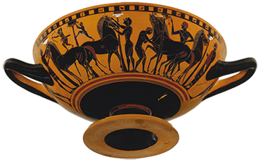
The Metropolitan Museum of Art, Nova York
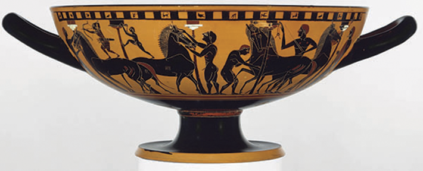
Cílice (usado como copo de vinho) com pinturas negras em terracota, da
Grécia, final do século VI a.C., Academia de Artes de Honolulu.
The Metropolitan Museum of Art, Nova York
Mãos à obra
Escolha um objeto pessoal, como uma caixa organizadora, um vaso de
plantas, um porta-canetas, uma garrafa, e faça uma composição para revesti-lo.
Selecione uma cena em que haja pessoas ou animais do cotidiano da sua cidade, da TV
ou do cinema e faça um desenho com a silhueta da cena, estilizada ou não. Procure criar a cena de
maneira que os colegas possam identificá-la.
Observe o exemplo de motivos geométricos gregos e crie padrões lineares ou
curvilíneos. Aplique-os de maneira organizada, como uma moldura da cena principal.
Mostre sua criação aos colegas, e discutam entre si sobre a técnica que desenvolveram
para realizar o trabalho e retratar as cenas escolhidas.
Happy Art/Shutterstock.com
Route55/Shutterstock.com
Período arcaico: simetria e beleza
O período arcaico (c. 600 a.C.-480 a.C.) certamente não seria chamado assim
por
quem
viveu nele. “Arcaico” significa antiquado e pode até ser interpretado como primitivo, apesar disso
essa
foi uma época de grandes avanços. Foi nesse período que a poetisa Safo escreveu seus famosos poemas
inspirados na Ilha de Lesbos, e o lendário contador de histórias Esopo elaborou suas fábulas. A
prosperidade crescia visivelmente. Havia políticas governamentais de incentivo à arte e à cultura e
patrocínio de indivíduos ricos a artistas e arquitetos, que foram responsáveis pela criação de
esculturas, belas cerâmicas e edifícios cívicos e religiosos, tanto nas cidades como em locais
sagrados.
Os primeiros templos gregos que subsistiram ao tempo datam do período arcaico.
Um
templo era idealizado para servir de casa terrestre e tesouro para o deus ou a deusa homenageados
com a
construção. Era elaborado de acordo com um padrão bem definido, que seguia um conjunto de relações
proporcionais e um sistema decorativo chamado de ordens gregas. As três principais ordens são:
dórica,
jônica e coríntia. Cada uma tem suas variantes e foi introduzida em épocas distintas. Entenda-as um
pouco mais na ilustração a seguir.
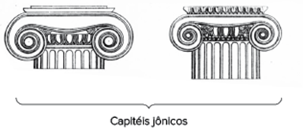
Acima, detalhe dos capitéis jônicos e coríntios.
Bibliographisches Institut, Leipzig, 1892
Colunas gregas das ordens dórica, jônica e coríntia
Bibliographisches Institut, Leipzig, 1892
A arte grega do período arcaico foi profundamente influenciada pela egípcia,
porém os gregos imprimiram em suas criações a sua maneira de ver o mundo e as características de seu povo.
Eles mantiveram os princípios de simetria (escultura e arquitetura), mas se afastaram do cunho
espiritual da arte egípcia. A arte grega era terrena, com uma forte preocupação com a beleza. Os deuses
gregos
tinham um comportamento espelhado nas ações humanas, ou seja, a mitologia grega era
predominantemente antropomórfica – e não zoomórfica, como a egípcia –, pois os deuses e seres
sobrenaturais tinham
aparência e comportamentos humanos.
Consolidando saberes
Discussão em sala
Egípcia × grega
Observe atentamente as esculturas. À esquerda, a egípcia, de aproximadamente 2490
a.C.-2472
a.C. À direita, a grega, de cerca de 530 a.C. Discuta com os colegas quais são as semelhanças e
diferenças que podem ser observadas entre as duas imagens.
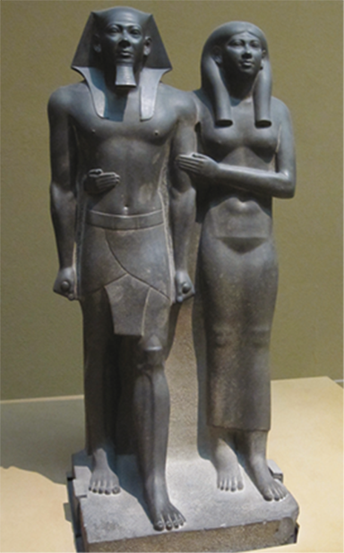
Miquerinos ou Menkauré (gov. entre 2490 a.C.-2472 a.C., IV Dinastia) e uma de
suas rainhas, provavelmente sua esposa principal Khamerernebty II, que também era sua irmã. Templo
do
Vale de Menkauré, Giza (ou Gizé). Pedra grauvaque, 142,3 cm x 57,1 cm x 55,2 cm. Museum of Fine
Arts,
Boston.
Jen (CC BY-SA 3.0)/Wikimedia Commons
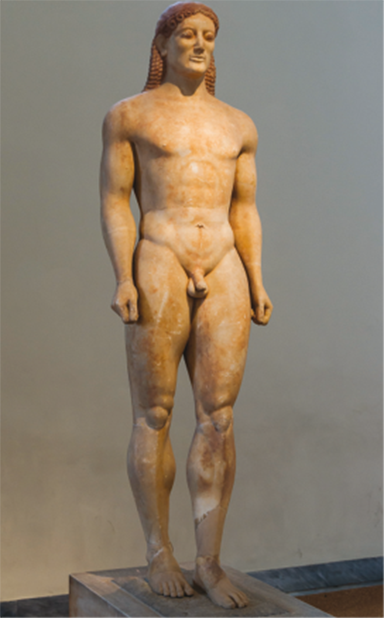
Kouros de Anavyssos. c. 530 a.C. Escultura em mármore insular com
reminiscências de pintura, alt. 194 cm. Museu Nacional de Arqueologia, Atenas.
Jebulon (CC0 1.0)/Wikipedia
Período clássico: o modelo da perfeição
A palavra “clássico” tem origem no termo latino “classis”, que faz
referência à divisão da sociedade em “classes”, de acordo com o critério da riqueza. Segundo a
historiadora de
arte Marilyn Stokstad, com o tempo, “clássico” assumiu o significado de “primeira classe”, “o mais alto
grau” e “o padrão de excelência”. Os artistas gregos do século IV a.C. procuravam criar imagens ideais
baseadas em proporções matemáticas perfeitas. Como os artistas romanos também se inspiraram nesses
ideais, o termo “clássico”, nesse contexto, refere-se às culturas da Grécia e Roma antigas. No uso
mais comum do termo, um clássico é algo – como uma obra literária, um automóvel ou um filme – de
qualidade não afetada pela passagem do tempo e que tem apelo universal.
A escultura Doríforo, por exemplo, que data do período augustano, entre o
final do segundo século a.C. e o início do primeiro século a.C., tinha como propósito lembrar aos jovens
aristocratas que eles pertenciam ao mundo clássico e aos ideais da cultura grega. Considerada a
cópia mais completa do Doríforo de bronze de Policleto, ela representa um jovem nu portando uma lança. O
braço direito está estendido ao lado do corpo; o esquerdo está dobrado para segurar uma lança, agora
perdida. A cabeça, com cabelos ondulados, está virada levemente para a direita. Nessa famosa cópia
pompeana,
é possível observar o uso do esquema quiasmático (que reproduz a forma da letra “x”) criado por
Policleto, que consistia na oposição recíproca dos membros do corpo: o braço esquerdo dobrado corresponde
à
perna direita esticada e o braço direito esticado, à perna esquerda dobrada.
Ao contrário dos egípcios, os gregos não atribuíam tanta importância
à vida após a morte. Eles acreditavam que suas “sombras” seguiriam para um lugar
determinado, mas contavam principalmente com os seus feitos no mundo concreto para lhes
dar fama e, assim, a imortalidade na história.
Discussão em sala
O que é um clássico?
Quais são as obras que você considera um clássico? Por quê?
As obras que você considera um clássico também são vistas da mesma
forma por seus colegas?
Em sua opinião, as obras que foram criadas e logo caíram no
esquecimento podem ser consideradas um clássico? Explique. Cite um exemplo.
... durante as Guerras Greco--Pérsicas, os persas haviam destruído os
edifícios e
as estátuas existentes na Acrópole em 480 a.C. Foi o governante Péricles (c. 495 a.C.-429 a.C.)
quem promoveu e organizou a reconstrução dos monumentos, começando com o Partenon em 447 a.C.
Atenas é hoje lembrada por seu brilhantismo cultural e intelectual e suas experiências com a
democracia como forma de governo, que atingiu seu auge no século V a.C. sob o governo de
Péricles, levando esse período a ser conhecido como século de Péricles. Contudo, Atenas foi
também uma cidade com tendências imperialistas e considerável poder comercial. Vale lembrar que
a democracia florescera sob Clístenes (cerca de 508 a.C.),que é chamado por vezes de pai da
democracia. É importante também observar que a democracia só estava disponível para os homens
atenienses, uma vez que mulheres, crianças, escravizados e pessoas de fora da cidade não eram
considerados cidadãos. O censo ateniense de 309 a.C. registrou 21 mil cidadãos, 10 mil
residentes estrangeiros e 400 mil outros – entre mulheres, crianças e pessoas escravizadas.
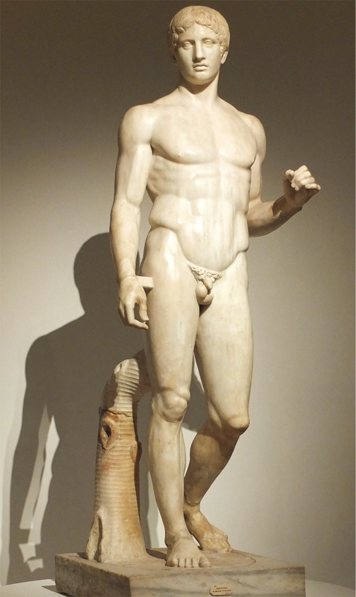
Réplica da estátua Doríforo, de Policleto de Argos, do Museu de Nápoles,
fotografada na exposição Moi, Auguste, “Empereur de Rome”, 2014, Grand Palais, Paris.
Os arquitetos gregos clássicos definiram e seguiram um conjunto de padrões
rígidos que serviu de base para um projeto ideal de templo. De forma semelhante, os escultores gregos
estavam preocupados em criar um modelo ideal de representação do corpo humano. Ao estudarem detalhadamente
a
aparência humana, os gregos selecionaram os atributos considerados mais desejáveis e estéticos, como
características faciais regulares, pele lisa e proporções corporais específicas, e os combinaram em
um único ideal.
O modelo ou cânone da escultura envolvia um sistema de proporções no qual uma
unidade básica servia de parâmetro para definir o comprimento de várias partes do corpo. Alguns
estudos sugerem que essa unidade pode ter sido a extensão do dedo indicador da figura humana ou a largura
da mão entre os nós dos dedos; outros sugerem que a unidade consistia na altura da cabeça, do queixo ao
couro
cabeludo.
Na arquitetura, um dos grandes símbolos do período clássico é a Acrópole de
Atenas, constituída de vários monumentos que expressavam visualmente os valores da cidade e seu orgulho
cívico. A Acrópole foi erguida na colina que formava o centro cerimonial da cidade.
O Partenon (447 a.C.-432 a.C.) foi projetado e construído pelos arquitetos
Calícrates e Ictinos em homenagem à deusa Atena, para sobressair a outras edificações no topo da
colina. Em sua construção, foi usado o mais fino mármore branco – até mesmo no telhado –, substituindo os
tradicionais ladrilhos de terracota. O renomado escultor Fídias foi responsável pelas esculturas da
decoração e pela supervisão de todo o projeto da Acrópole.
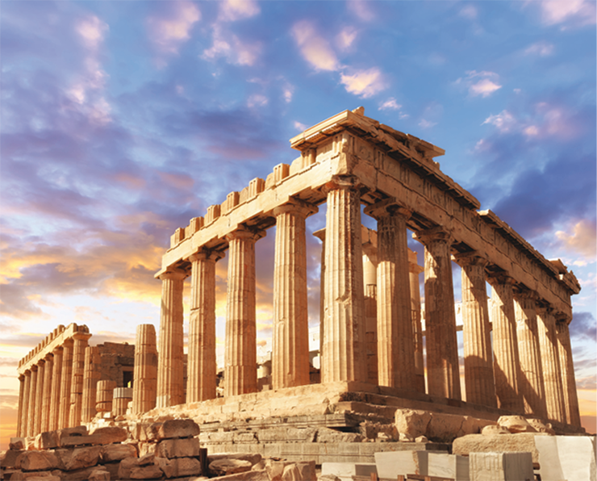
Ruínas do Partenon, em Atenas, Grécia.
Anyaivanova/Shutterstock.com
/p>
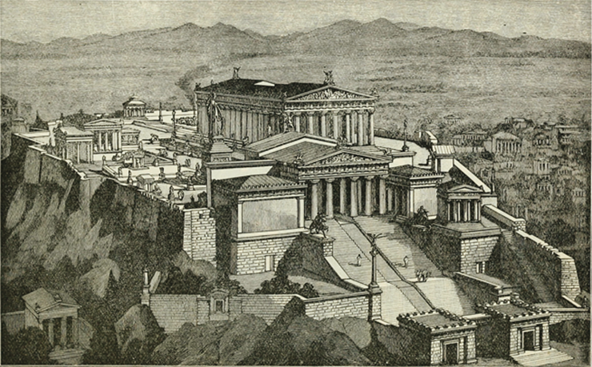
Ilustração representando a Acrópole de Atenas, criada em 1898 por Philip van
Ness Myers (1846-1937) para o livro Eastern Nations and Greece.
Internet Archive Book Images
Mais
Percy Jackson e o ladrão de raios. Direção: Chris Columbus. 2010. Classificação
indicativa: 14 anos.
Esse filme é uma adaptação do romance O ladrão de raios, escrito por
Rick Riordan. Nele, o adolescente Percy Jackson descobre que é o filho do deus grego Poseidon, deus
do mar.A fim de evitar uma guerra entre os deuses do Olimpo, pois seu tio Zeus o acusa de ter
roubado seu raio para dar a Poseidon, Percy navega, com a ajuda de um sátiro e a filha de
Atena, em uma perigosa missão. No caminho, eles enfrentarão vários inimigos mitológicos determinados
a detê-los (como Hidra e Medus. Apesar de ser um filme de fantasia, não fiel à mitologia grega,
ele apresenta vários elementos desse universo antigo com uma roupagem moderna.
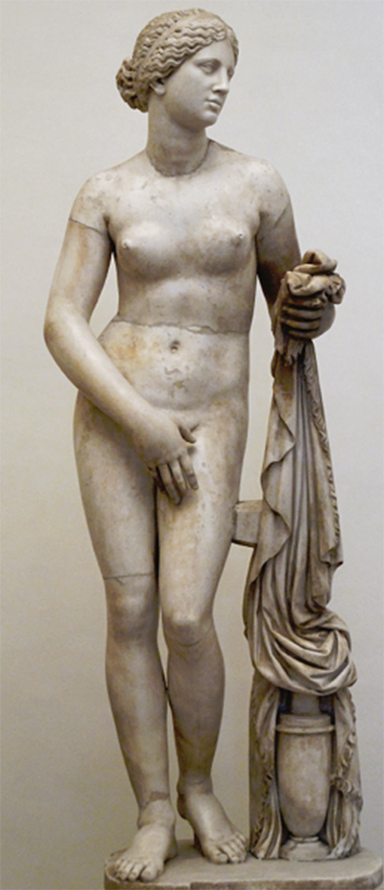
Afrodite de Cnido. Escultura em mármore, cópia romana do original grego de
Praxíteles, do século IV a.C. Elementos originais: tronco e coxas; elementos restaurados: cabeça,
braços, pernas e acessórios (casaco e jarro).
Marie-Lan Nguyen/Museo Nazionale Romano, Palazzo Altemps, Roma
Período helenístico: menos razão, mais emoção
Os artistas do período helenístico desenvolveram visões bem distintas
daquelas
de
seus antecessores gregos clássicos. Em vez de buscar um modelo artístico ideal e generalizado, os
artistas helenistas mudaram o foco para o individual e o específico. O heroico deu lugar ao
cotidiano,
e
a indiferença serena se transformou em emoção individual. A produção desse período apela para os
sentidos e o coração dos espectadores por meio de temas e poses expressivas. Embora isso já fosse
uma
tendência no final do estilo clássico, essas características se tornaram muito mais pronunciadas
na
arte
helenística. De modo geral, são identificadas duas tendências amplas e contrastantes: a que
rejeitava
as
restrições clássicas e experimentava livremente novas formas e temas; e a que procurava seguir os
modelos clássicos anteriores. Neste último caso, os escultores selecionavam aspectos de obras
favoritas
de escultores do século IV a.C. – especialmente dos renomados artistas clássicos Praxíteles (c.
395
a.C.-330 a.C.) e Lísipo (séc. IV a.C.) – e incorporavam o estilo deles nas próprias obras.
As menções aos lugares em que essas esculturas foram encontradas (Cnido e
Milo) são comuns. A Vênus de Milo foi planejada de modo a lembrar a Afrodite de Cnido de Praxíteles e, de
fato, a cabeça, com seu olhar sonhador, sugere a obra perdida do antigo mestre. Contudo, a postura sinuosa
e a forte projeção do joelho, bastante insinuante, assim como a rica e tridimensional qualidade da
veste, são típicas da arte helenística. Além disso, a representação da carne macia que transparece sob o
leve tecido, bem como o fato de a veste parecer escorregar da figura, acrescenta um toque refinado de
tensão erótica, que é uma característica própria do período helenístico.
Roma: de arte e conquistas
Assim como a Grécia, Roma também conquistou um grande império e exportou sua
arte para os diversos locais que foram incluídos em seus domínios. Muito do que chegou até o nosso
tempo se deve, em parte, a essa grande difusão do modelo greco-romano. A fim de estimular o crescimento e
conferir coesão ao vasto império construído, o governo romano empreendeu programas de escala e
complexidade impressionantes, erguendo não apenas edifícios administrativos, religiosos e
comerciais organizados de maneira centralizada – havia fóruns e basílicas no mesmo espaço –, mas também
pistas de corrida, teatros, banhos públicos e sistemas de fornecimento de água, prédios de apartamentos e
até mesmo novas cidades inteiras!
O comércio e as tropas tinham de continuar avançando para novos territórios,
o que levou os romanos a construir uma vasta rede de estradas que ligavam a capital aos pontos mais
longínquos do império.É por isso que usamos a expressão “todos os caminhos levam a Roma”.A herança romana
ainda pode ser vista em muitas rodovias europeias que seguem as rotas estabelecidas pelos antigos
engenheiros romanos.
Em termos artísticos e culturais, os romanos se inspiraram profundamente na
Grécia. As ordens gregas foram incorporadas à arquitetura romana, e os artistas gregos tinham trabalho
garantido no Império Romano. Tudo foi devidamente “importado” e “imitado” dos gregos, o que não tira o
valor
de sua riquíssima arte. Vale ressaltar também que muitas inovações foram feitas. Na arte, é comum que
se façam imitações, mas cada artista tem uma maneira própria de “copiar” ou recriar. Graças à
imitação, grande parte das esculturas “gregas” é conhecida hoje, pois, na verdade, elas são cópias
romanas,
cujos originais foram perdidos. Os artistas romanos procuraram fazer cópias fidedignas às obras
originais.
Por dentro da arte
Uma das grandes inovações dos romanos em
relação
aos
gregos consiste na utilização de arcos redondos na arquitetura. O uso dessas estruturas
radiantes ou redondas possibilitou a construção de grandes espaços sem colunas de sustentação.
Nesses espaços, havia uma abóbada, isto é, uma construção semicircular arqueada apoiada sobre
colunas nas extremidades, graças ao recurso da cunha.
O arco radiante é projetado de forma a deslocar a maior quantidade do
peso
da parte de cima para as extremidades curvas, e destas para o chão, com o auxílio de elementos
verticais (pilares, colunas ou batentes de porta ou de janel. Arcos radiantes podem ser
alongados para formar uma abóbada de berço ou de outros tipos. Muitas vezes, o excesso de peso
nas extremidades pode exigir um suporte externo adicional, chamado de contraforte (na imagem a
seguir, observe os muros nas laterais do arco). O arco radiante e a abóbada de berço eram
conhecidos e usados de maneira limitada pelos antigos mesopotâmios, egípcios e gregos. Esses
elementos foram empregados mais extensivamente pelos etruscos, povo que viveu na atual região
da
Toscana, na Itália; porém, foram os romanos que perceberam a sua força potencial e
versatilidade
arquitetônica, explorando-os ao máximo.
Como os etruscos, os romanos também adotaram os deuses e heróis gregos,
dando-lhes nomes em latim. Na Europa Ocidental, os sofisticados sistemas legais,
administrativos
e culturais, impostos aos povos conquistados pelos romanos, permaneceram ativos por muitos
séculos. Da mesma forma, o que ficou conhecido como Arte Bizantina no Mediterrâneo Oriental
tem
uma forte herança das tradições clássicas e dos estilos da Roma Antiga.
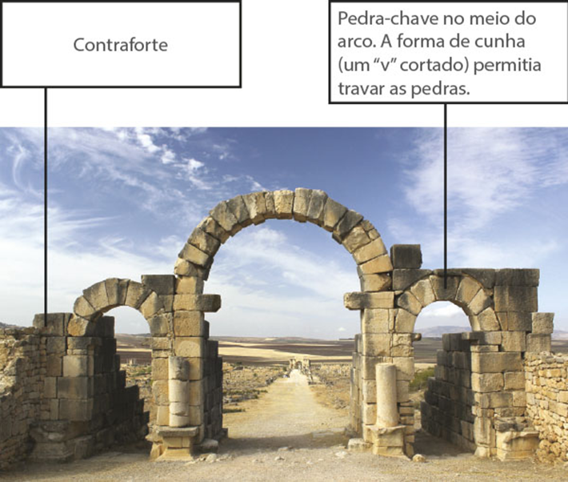
Vaughan Sam/Shutterstock.com
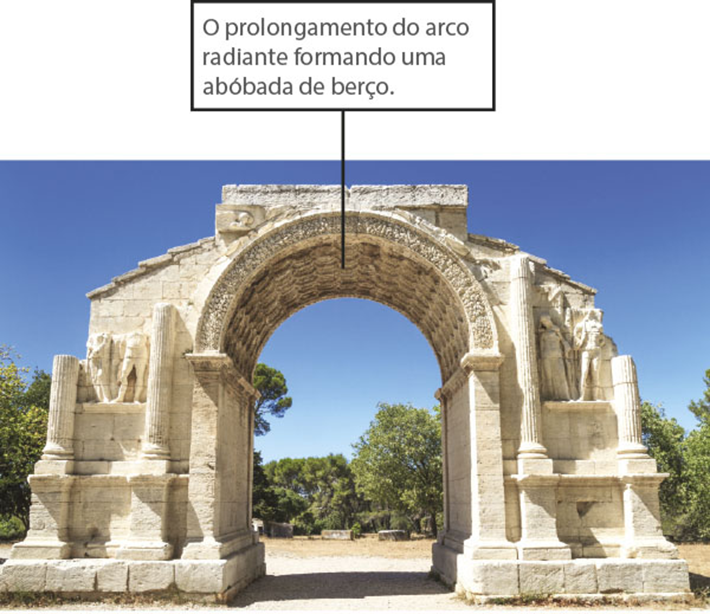
Arcos redondos: os romanos perceberam todo o potencial de sua utilização
na
arquitetura.